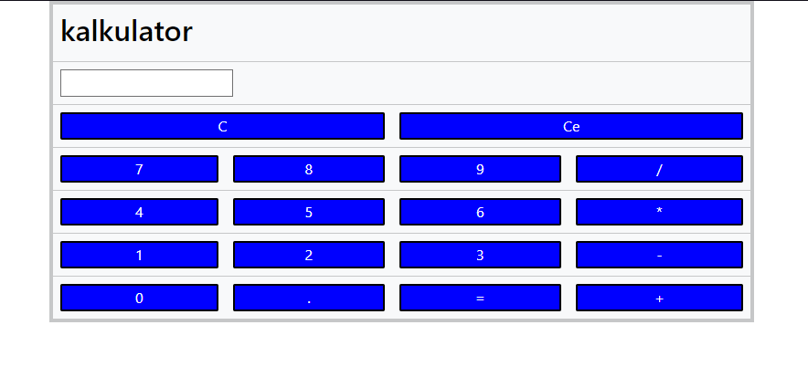
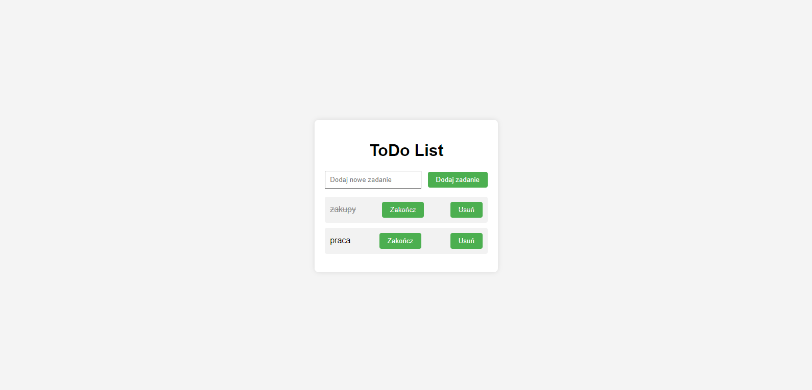

Projekty
Jest to projekt gry w Unity kółko i krzyżyk z działającym botem i trybem dla dwóch gracy
bot ma za zadanie nie pozwolić wygrać graczu.

Jest to projekt gry pary napisany w języku JavaScript bazuje na tabelach z przyciskami .

prosty interaktywn kalkulator zrobiony za pomocą JavaScript,html,CSS.

lista to do zrobiana za pomocą JavaScript,Html,CSS .Lista zapisuje w danch przeglondarki zadnai.